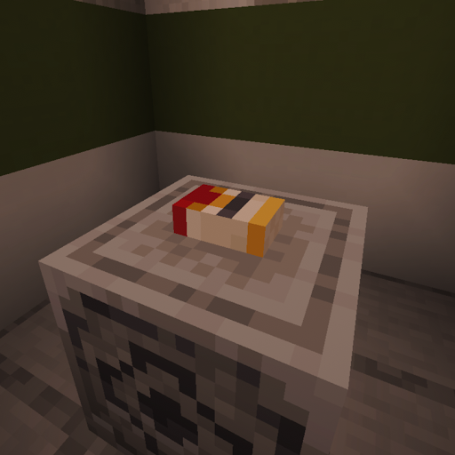

Объект
SCP-373-SP
Класс объекта
Особые условия содержания
В связи с невозможностью содержать SCP-373 иным способом, находится в личном пользовании доктора Джейн Кросс, с разрешения ответственного персонала. Передача объекта третьим лицам без письменного допуска запрещена.
Использование сигарет из состава SCP-373 допускается только при фиксации даты, времени, способа применения и последующего физиологического состояния субъекта. Рекомендуется регулярное медицинское обследование лиц, подвергшихся воздействию объекта, с особым вниманием к состоянию дыхательной системы и легочной ткани.
Физическое повреждение упаковки не рекомендуется. Попытки уничтожения объекта признаны неэффективными.
Описание
SCP-373 представляет собой стандартную картонную пачку сигарет на двадцать единиц марки **Canyon Marshal**. Установлено, что указанная торговая марка не существует и никогда не существовала в известных коммерческих, рекламных, производственных или регистрационных базах данных.
Несмотря на формат упаковки, рассчитанный на двадцать сигарет, внутри SCP-373 при контрольных осмотрах находится **девятнадцать** сигарет. Местонахождение двадцатой сигареты неизвестно. Следов ее изъятия, отсутствия или производственного дефекта не обнаружено.
Внешний дизайн упаковки SCP-373 изменялся в течение периода наблюдения. Изменения касались цветовой схемы, типографики, графического оформления и общего стиля пачки. При этом название марки **Canyon Marshal** сохранялось во всех зафиксированных вариантах.
Сигареты внутри SCP-373 внешне не отличаются друг от друга. Тем не менее доктор Джейн Кросс отмечает, что отдельные экземпляры могут иметь различный вкус. В зафиксированных случаях упоминались ментоловый и вишневый вкусовые профили. Внешних признаков, позволяющих заранее определить вкус конкретной сигареты, не выявлено.
При выкуривании сигареты из состава SCP-373 в организме человека запускается повышенный регенеративный фактор. Воздействие ускоряет восстановление незначительных повреждений тканей, включая царапины, поверхностные порезы и аналогичные травмы. Регеративный фактор усиливается с каждой выкуренной сигаретой за последние 24 часа.
SCP-373 не способен инициировать полное восстановление утраченных конечностей.
Положительный регенеративный эффект сопровождается выраженным негативным последствием: у лиц, подвергшихся воздействию SCP-373, значительно повышается риск развития рака легких. Уровень риска оценивается как существенно превышающий показатели, характерные для обычного табакокурения.
При полном выкуривании сигареты либо ее уничтожении иным способом остаток сигареты растворяется без видимых следов. После завершения данного процесса в упаковке SCP-373 вновь обнаруживается сигарета, восстанавливающая общее количество до девятнадцати единиц.
Попытка механического повреждения целостности упаковки SCP-373 (путем разрыва) продемонстрировала способность объекта к автономной регенерации. Полное восстановление структуры упаковки зафиксировано в руке доктора Джейн Кросс в период наступления ближайшего рассвета.
Установлено, что SCP-373 обладает свойством мгновенной транслокации: объект материализуется непосредственно в руке доктора Кросс в указанный выше временной интервал, независимо от её текущих географических координат.
Установлено, что триггер активации данных аномальных свойств SCP-373 коррелирует с локальным астрономическим временем.
SCP-373 безошибочно определяет момент наступления рассвета, основываясь на текущем географическом местоположении доктора Кросс.
Таким образом, время регенерации и транслокации SCP-373 является переменной величиной, напрямую зависящей от часового пояса и координат.
SCP-373 был поставлен на содержание после того, как его наличие было зафиксировано в личном пользовании доктора Джейн Кросс.
Установлено, что аномалия находилась во владении субъекта еще до её официального вступления в фонд.
Благодаря высокой профессиональной квалификации в области криминалистики, доктор Кросс самостоятельно идентифицировала аномальную природу объекта и предприняла первичные меры по его изучению.
Ввиду исключительных экспертных навыков и продемонстрированной лояльности, доктор Кросс была интегрирована в структуру Фонда.
Примечание
Несмотря на низкую непосредственную опасность SCP-373, объект не должен рассматриваться как медицинское средство. Регенеративный эффект SCP-373 ограничен, нестабилен в долгосрочном прогнозе и сопровождается выраженным канцерогенным риском.